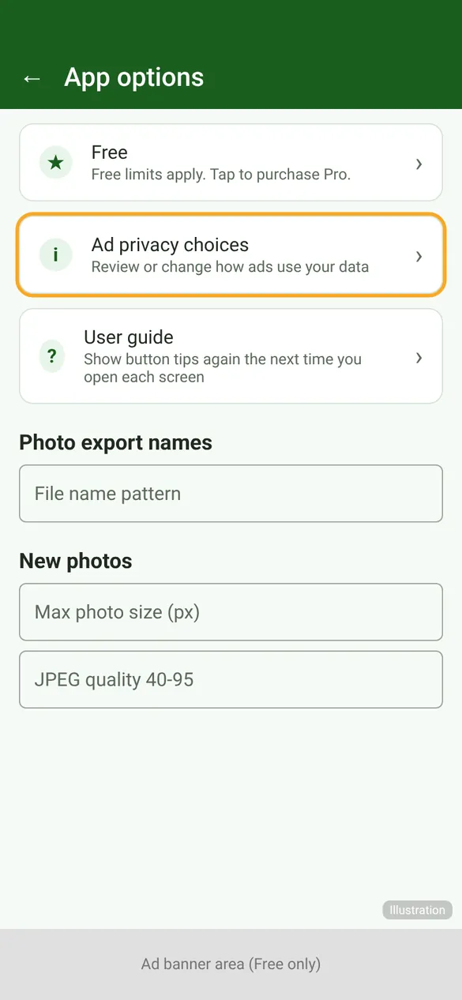

User guides › Ad privacy choices
Ad privacy choices
How adverts work in the Free version and how to review or change your ad consent.
The Free version shows adverts from Google AdMob: a banner at the bottom of some screens and, sometimes, an advert before exports, archiving or restoring. Pro has no adverts.
Consent
- Where the law requires it (for example in the UK and EEA), Google’s consent message is shown the first time it is needed. Your choice decides whether adverts can be personalised.
- If consent does not allow adverts, the app carries on without them.
Change your choice
- Open App options (⚙).
- Tap Ad privacy choices – Review or change how ads use your data.
- Google’s form opens. Change your choices and close it.

The option appears only on the Free version and only where a consent choice applies. See the Privacy Policy for what advertising data is used.